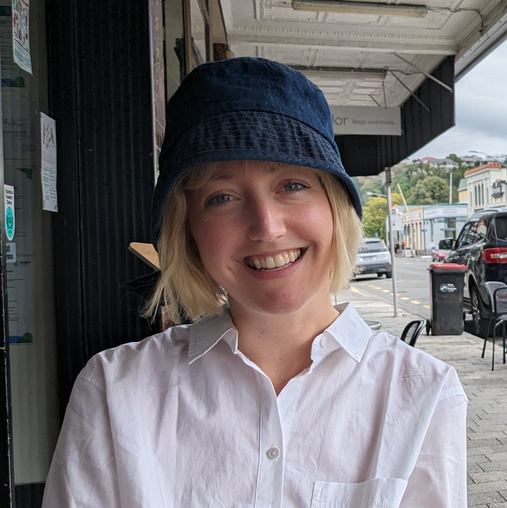

Born in New Zealand. Raised on the internet. Based in New York.
I started out as a journalist, magazine copyeditor, and music blog cofounder. These days I craft stories across digital, experiential, and live formats as a copywriter and scriptwriter. I've written for major music festivals, Broadway productions, and global brands.
I'm endlessly curious and always dabbling in new creative ventures — when I'm not writing, you'll find me dancing, working on comedy sketches, playing music, making art, and learning French. Pourquoi pas!
I'm available for freelance and full-time opportunities, so please get in touch.